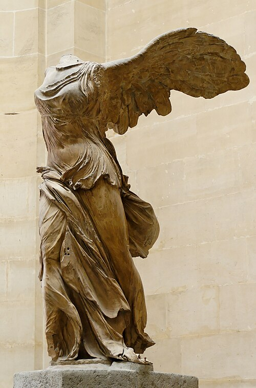

Winged Victory of Samothrace
She stands at the top of the grand Daru staircase, wings flung back, drapery soaked and clinging as if she has just alighted on the prow of a ship. The ship itself is carved too — she came mounted on a stone warship in a pool of water on the sanctuary of Samothrace.
Discovered in 1863 in more than 100 fragments. Her head and arms have never been found.
Look from the right: the sculpture was designed to be seen from that side first — the drapery is more finished there.